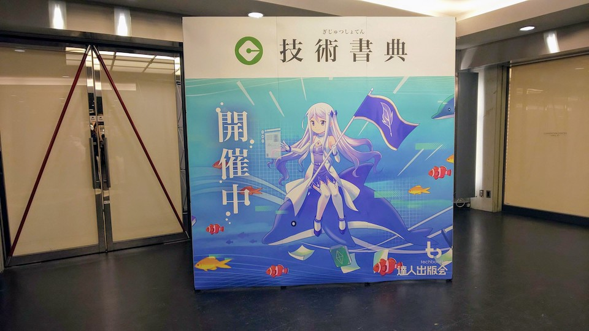
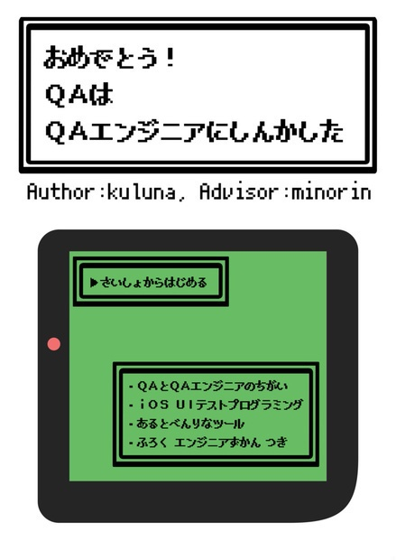

技術書典7 振り返り
2019-09-23 18:01:16 +0900 JST

今回も技術書典7でサークルとして参加したのでその報告です。
今回も新刊を書きました。
おめでとう!QAはQAエンジニアにしんかした - booth.pm

テーマ
今回はQAにフォーカスした本を書きました。QAは「Quality Assurance」の略で品質保証を担当するポジションの人です。製造では昔から存在していましたが、この考えをITの分野にも輸入し、アプリやサービスの品質を確かなものにしていく重要な人たちです。
今年の4月に今の職場にQAの方がこられ、テスト自動化の話が出てきたところでQAさんがテスト自動化をしてみたいと立候補いただいたのがきっかけでした。
非エンジニアの人に自動テストを書けるようにするという体験はなかなかないと思い今回1冊の本にまとめてみました。
執筆
今回も前回に引き続き原稿はVisual Studio + TextLintを使ってMarkdownで章ごとに執筆を行いました。
今回は実際にご協力いただいたQAの方にも原稿を見ていただきたかったのでBitbucket上でフォーマットされた状態で2回レビューをいただきました。
ちなみに裏表紙にいるドット絵のおんなのこがそのQAさんです。
ここだけの話、締め切り当日にドット絵の服装にリテイク食らいました。なんやかんやで楽しかったです。
当日
本当はQAさんを会場に呼んで一緒に売りたかったのですが、QAさんが当日体調を崩してしまい非常に残念でしたが設営販売撤収を私1人で対応することになりました。
職場の人が3人+前職の同期1人が応援にかけつけていただいたおかげで特にトラブルなく最後の17:00まで販売できました。本当にありがとうございました。特に職場の方は私が本を買いにい間売り子をしていただいて本当に助かりました。
売上
そして気になる売上ですが、今回は新刊であるQA本と既刊のRESTful本を頒布しました。
結果、
- QA本 61冊
- RESTful本 143冊
でした！
QA本が1冊1000円、RESTful本が1冊500円なので、
(1000*61)+(500*143) = 132,500円
しゅごい・・・
技術書典って改めてすごいマーケットだなと感じました。
KPT
こちらも恒例のKPTです。
前回のTRY
- 自信を持ってたくさん刷る(在庫はBOOTHが引き取ってくれる)
- QA100冊、RESTful150冊刷って売り切れることなく販売できた👍
- きちんと文章校正できるだけの時間を作る(余裕を持って書く)
- 今回もだめだったよ・・・😭
- 図解も増やすと読みやすくなりそう
- 図解はかなり増やせました👍
KEEP
- 今回めっちゃ売れた
- QAの方がたくさんいらして買ってくださった(気持ち女性が多かった気がしました)
- 最後まで販売できた(前回は40部即売り切れ&16:00で撤収)
- 欲しかった本も買えた
- 売れ行きをはかるため売れたら正の字をつけてカウントしてた
PROBREM
- 500円玉のお釣りの用意を忘れた(当日はお客様の500円玉でなんとかやりくりできました)
- ディスプレイ(設営)が貧弱
- 見本マークがないので見本どこですか？とめっちゃ聞かれた
- 題材がニッチすぎた(QAかつiOSと限定的すぎた)
- 表紙が微妙だった(ゲームっぽい・ドット文字が読みづらい)
- QAさんが体調不良で来られなかった
- 前日財布を飲食店に置き忘れたのに気づいて急いでお店に電話し無事戻ってきたけど、当日家から出発後に財布を忘れて慌てて取りに戻った(会場には間に合いました)
TRY
- 500円玉10枚ぐらいは常に確保しておく
- 設営は他のサークルを見て勉強する
- 付箋でいいので見本マークつける
- 自分の書きたい題材もいいけど、他の人が読みとりやすいようなネタにする
- 表紙も締め切りぎりぎりに考えるから雑になるので、執筆始めた時から考え始める
- QAさんは薬飲んでゆっくり寝てね
- 財布は大事にしよう